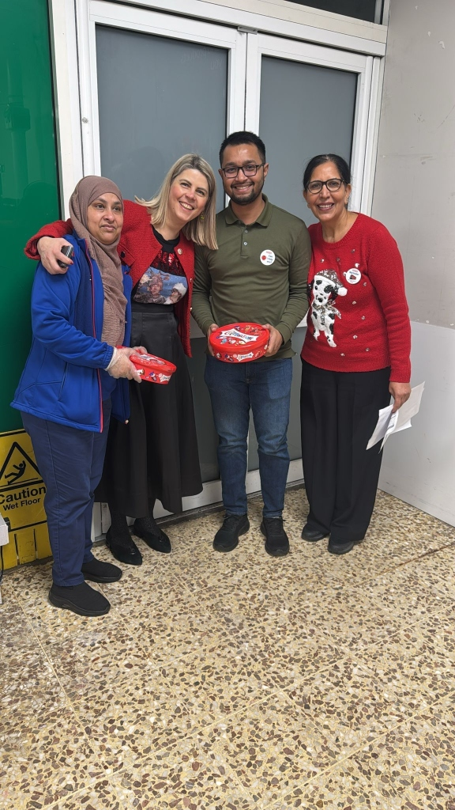
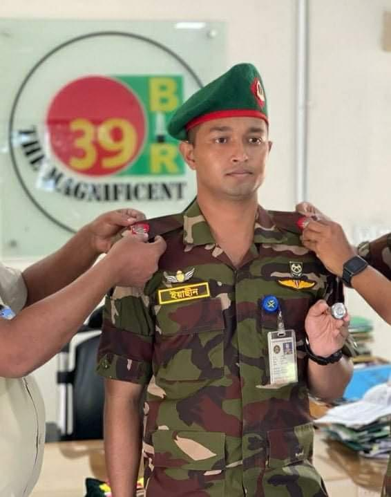
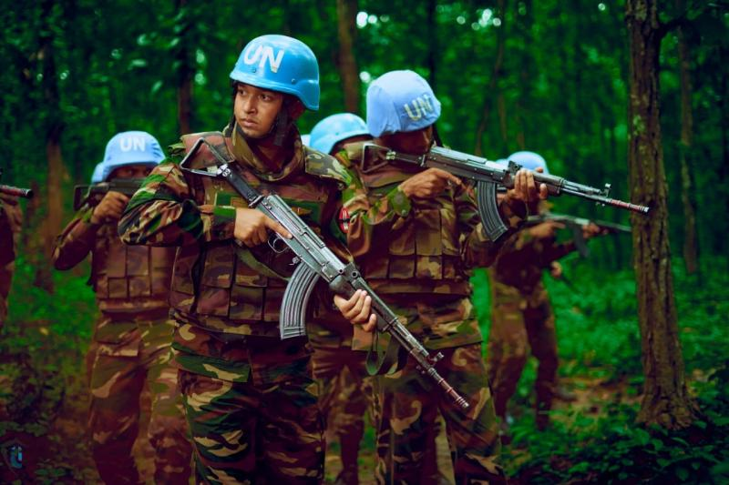
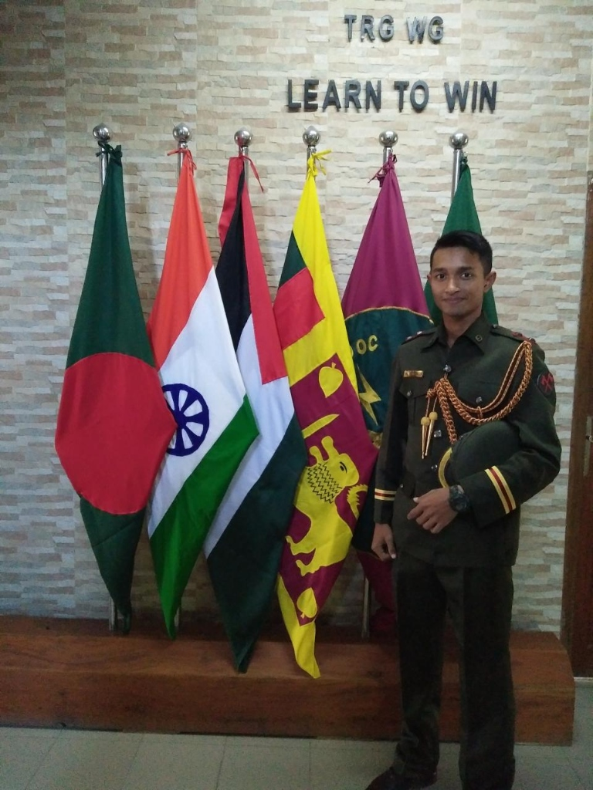
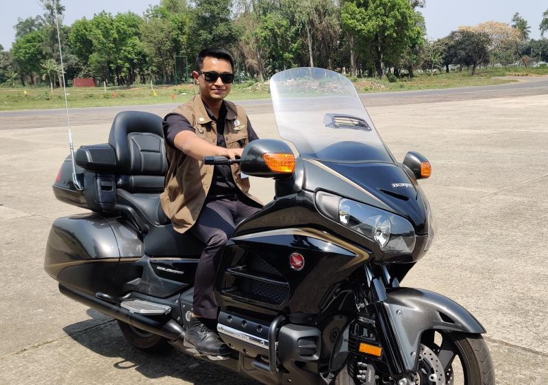
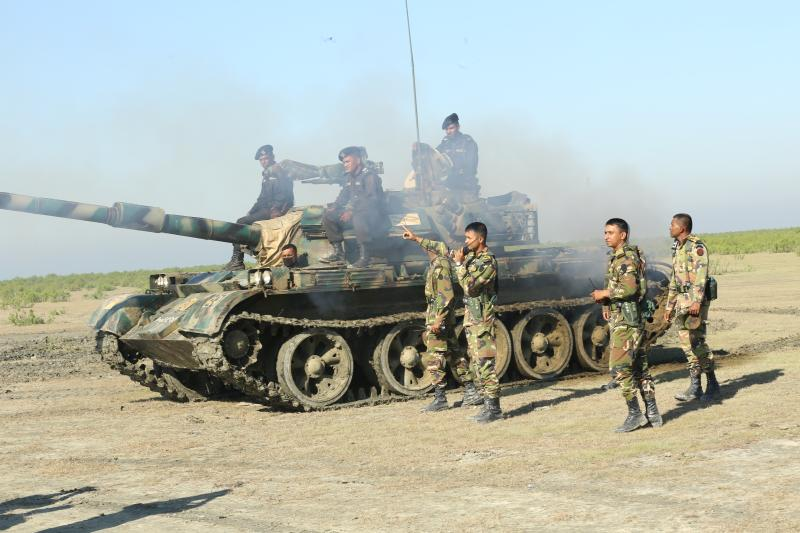
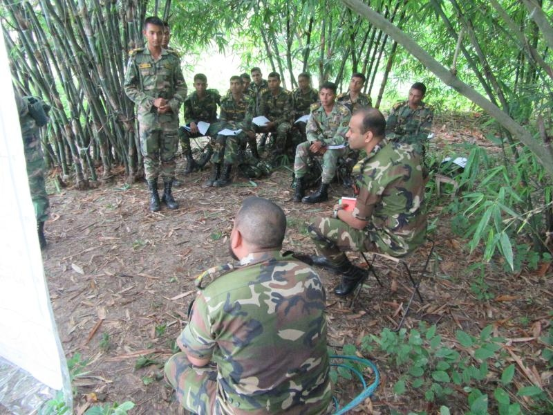
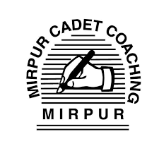

With a background spanning military command & logistics, international peacekeeping, corporate security, and digital growth, I focus on turning complexity into clarity. I’ve led teams across operations, logistics, and digital platforms; scaling performance, improving systems, and delivering results under pressure.
Get In TouchI am a disciplined and strategic leader currently pursuing an MBA at the University of East London. My career has been built on a foundation of integrity, adaptability, and performance-focused execution. From commanding large military units to advising on digital business growth, I bring a versatile skill set that bridges the gap between tactical operations and strategic management.
Currently working in UK-regulated security, I am seeking a managerial role where I can apply my experience in workforce planning, risk assessment, and team mentorship to add tangible value.








Workforce Planning, Resource Allocation, Logistics Management, Cost Control
Risk Assessment, Incident Management, Health & Safety (UK), Access Control, CCTV
HR Compliance, Staff Onboarding, Reporting, Microsoft Office (Excel, Word), Presentation
Digital Operations Analysis, Digital Marketing, SEO Basics, Web Development Strategy
I am actively seeking managerial or supervisory roles where my leadership and operational experience can make a difference. Whether you have a question or just want to say hi, my inbox is always open.
Say HelloTelephone: +447448628391